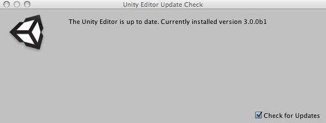

Check For Updates
Unity checks whether updates are available. This check happens either when Unity is started, or when you choose the Help->Check for Updates menu item. The update check sends the current Unity revision number (the five digit number that appears in brackets after the version name in the About Unity dialog) to the update server where is it compared with the most-up-to-date released version. If a newer version of Unity is available the following dialog is shown:

Window displayed when there is a newer version of Unity available for download.
If the version in use is the most up-to-date then the following dialog is shown:

Window displayed when Unity is updated to the latest version.
Window displayed when Unity is updated to the latest version.
Click the Download new version button to be taken to the website where you can download the new version.
Update Check Frequency
The response from the server also contains a time interval which suggests when the next update check should be made. This allows the update check to be made less frequently when Unity is not expecting updates to be made available.
Skipping Update Versions
If you are in the middle of a project you may not want to update to a new version of Unity. Ticking the Skip this version button on the Unity Editor Update Check dialog will prevent Unity from telling you about this update.
Disabling the Update Check
It is not possible to disable the check for updates. The Check For Updates tick box on the dialog controls whether you are notified of updates (if they are available) when Unity starts. Even if you have unticked the Check for Updates option you can still check for updates by using the Help->Check for Updates menu item.
Page last updated: 2010-09-07